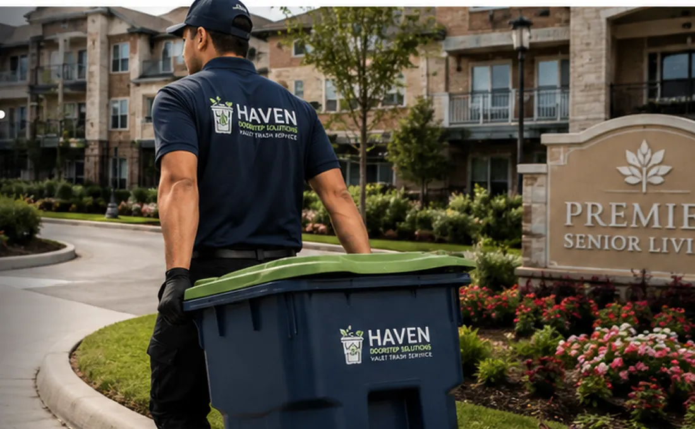

Doorstep Waste Collection
Scheduled pickup from designated doors or collection points.
North Houston property support
Reliable doorstep waste collection for senior living, multifamily, apartment and commercial shopping center properties.

The Haven difference
Haven Doorstep Solutions helps properties maintain cleaner spaces, reduce routine staff workload and provide a more convenient experience for residents, tenants and visitors.
Services
We build practical service plans around your property layout, collection schedule and operational needs.
Scheduled pickup from designated doors or collection points.
A dependable service that reduces unnecessary trips and supports accessibility.
We handle routine collection so your team can stay focused on higher-priority work.
Consistent pickup helps support cleaner hallways, breezeways and shared spaces.
Frequency and service windows can be tailored to the property.
Collection support for retail suites, offices and commercial shopping centers.
Who we serve
Haven is designed to grow with the needs of North Houston properties.
Support for residents and care teams through dependable, scheduled collection.
Consistent service that helps reduce routine burdens on staff.
Convenient service that supports resident comfort and accessibility.
Reliable doorstep collection for multifamily and apartment properties.
Flexible collection solutions for retail suites, offices and shared commercial areas.
Scalable support for owners and managers with multiple properties.
Why Haven
Property teams need vendors who are responsive, consistent and easy to work with. Haven is built around those expectations.
Start a ConversationAbout Haven
Haven Doorstep Solutions was founded with a simple mission: provide dependable property support services that make life easier for communities and the people they serve.
We believe reliable service, thoughtful communication and attention to detail are the foundation of a strong partnership.
Serving North Houston
Request a consultation
Complete the form or contact Jennifer directly. There are no startup fees for the community to begin a conversation or receive a customized proposal.